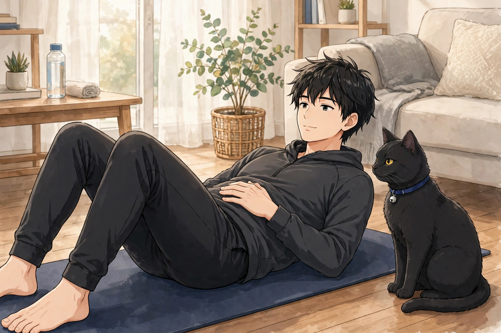

お腹対策｜ドローインと歩き方の基本（メンズ・自宅）

始める前に：痛み・しびれがある場合は行わないでください。途中で痛みが出たら中止し、気になる症状が続く場合は医療機関に相談してください。回数や秒数は目安で、無理のない範囲から始めてください。
ケント：シャツの上のお腹が気になる人は、呼吸の練習と歩き方から始めるのが続けやすいです。所要は約5分です。
やり方1：仰向けのドローイン（5呼吸×2セット）
- 仰向けで膝を立て、手をお腹の上に置きます
- 息を吐きながらお腹を薄くへこませます（図1）
- 力んで固くしないことが目安です
やり方2：歩き方の確認（通勤で1分）
目線を前に保ち、耳からかかとまでが一直線に近づく立ち姿を意識します（図2）。ドローインの呼吸を、歩きながら薄く保つ練習もできます。
服の見え方との関係
お腹の見え方は、ボトムスのウエスト位置と姿勢の両方で変わります。服側の選び方はお腹まわりが気になる男性のボトムスの選び方にまとめています。
この記事のテーマに合う用品
PR：仰向けの運動に合うマット（PR）


あわせて読みたい：トレーニング用品一覧／巻き肩・猫背対策